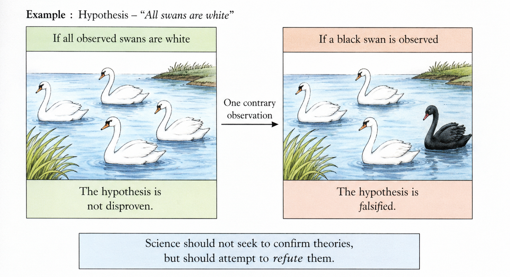
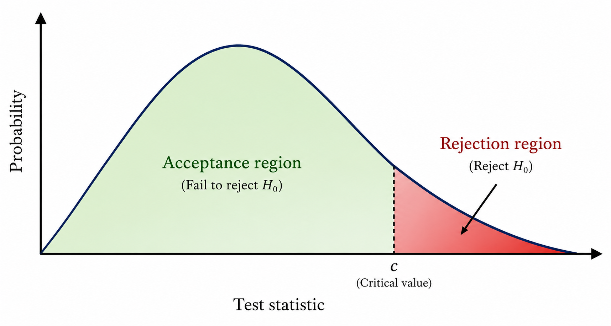
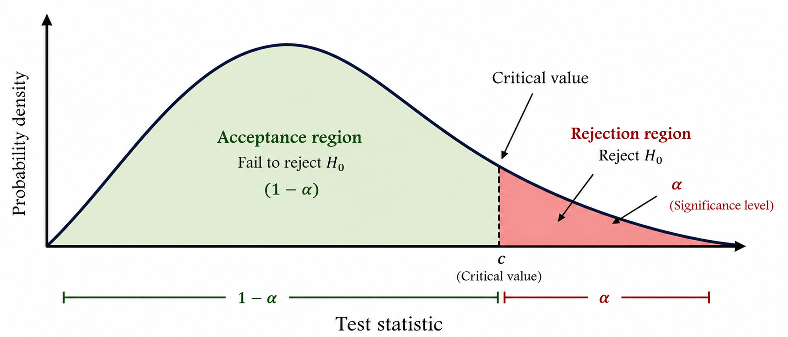
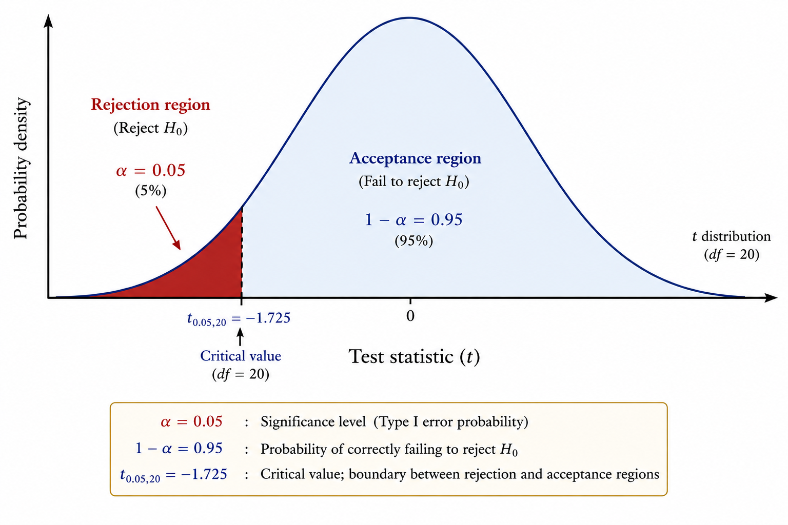
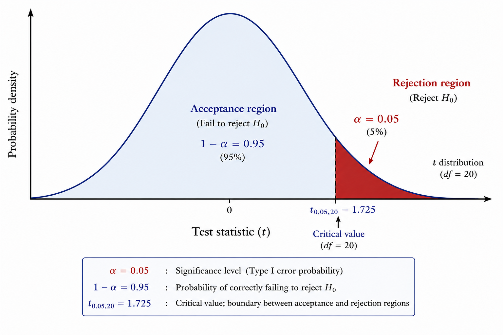
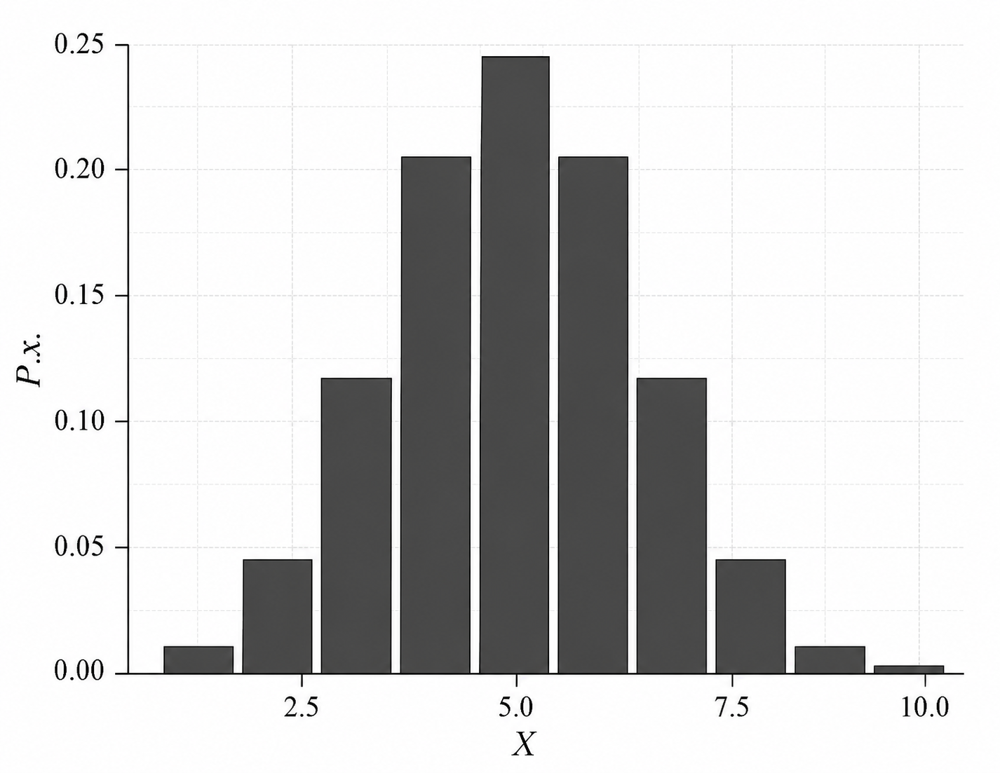
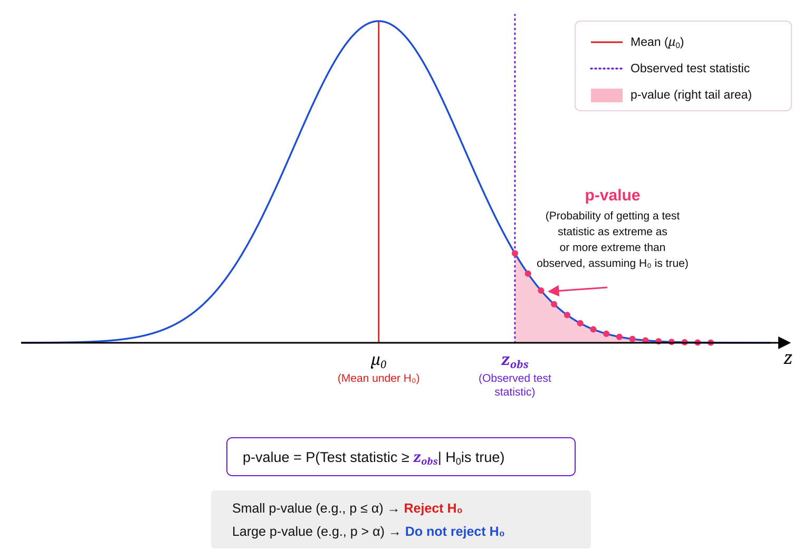

13 Hypothesis testing
In the previous chapters, we have learned how to describe and summarize data using measures of central tendency and dispersion. These tools help us understand what a sample of data looks like. But in agricultural research or in any research, we often go a step further, where we want to use the sample to draw conclusions about the larger population. This is where the branch of statistics named as inferential statistics come in to play, and at its core lies the process of hypothesis testing.
13.1 A hypothesis
Scientific research often involves conducting experiments to study natural phenomena or to evaluate the effect of different conditions or practices. In a scientific experiment, observations are made systematically and data are collected to answer specific research questions.
To conduct an experiment in a meaningful way, the researcher must begin with a clear hypothesis. A hypothesis is a tentative and testable statement formulated on the basis of prior knowledge, observations, or scientific reasoning. It provides direction to the study by clearly stating what is to be examined and guides the collection and interpretation of experimental data.
Examples of hypotheses from agriculture:
“Application of nitrogen fertilizer increases the grain yield of rice.”
“Improved seed treatment results in higher germination percentage than untreated seeds.”
“Drip irrigation leads to better water-use efficiency compared to surface irrigation.”
“A new crop variety produces higher average yield than the existing variety.”
These hypotheses can be tested by conducting a properly designed scientific experiment.
ImportantNote
A statistical hypothesis is a specific, testable statement about a population parameter. It expresses an assumption or claim that can be tested using statistical methods based on sample data. Statistical hypotheses are generally formulated in pairs: the null hypothesis (denoted as \(H_0\)), which represents the default or no-effect assumption, and the alternative hypothesis (denoted as \(H_1\) or \(H_a\)), which represents a statement that contradicts the null hypothesis.
The falsification principle
The falsification principle, proposed by the philosopher Karl Popper, is a way of distinguishing science from non-science. It suggests that for a theory to be considered scientific, it must be capable of being tested and potentially proven false. For example, the hypothesis “all swans are white” can be falsified by observing a single black swan. According to Popper, science should attempt to disprove a theory, rather than continuously seek evidence that confirms it. (Popper 1959)
This idea forms the philosophical backbone of hypothesis testing in statistics.
13.2 Null and alternative hypothesis
Considering the Popperian Principle of Falsification, we need to translate the working hypothesis into a framework of two competing statements. These are termed the null hypothesis and the alternative hypothesis.
Null hypothesis
The null hypothesis (\(H_0\)) is a statement that there is no effect, no difference, or no relationship between variables. It represents the default or status quo assumption. In hypothesis testing, we assume the null hypothesis is true unless we have strong statistical evidence against it.
Why do we need a null hypothesis?
In an experiment, the results seen in the sample may differ from expectation either because a real effect exists, or simply because of random chance. The null hypothesis begins with the assumption that no real difference or effect exists in the population. Using this assumption, statistical tests examine the sample data and calculate how likely it is to obtain such results purely by chance. This helps us decide whether the observed difference is likely to be real or just a fluke.
For example, suppose a researcher tests a new fertilizer and finds that plants in the sample are 3 cm taller than usual. This difference may be due to the fertilizer or simply to natural variation among plants. By assuming that the fertilizer has no effect (the null hypothesis), a statistical test determines whether the observed difference is likely to have occurred by chance. If it is very unlikely, we reject the null hypothesis and conclude that the fertilizer probably has a real effect.
Alternative hypothesis
The alternative hypothesis (denoted by \(H_1\) or \(H_a\)) is a statement that contradicts the null hypothesis. It proposes that a real effect, difference, or relationship exists in the population and that the observed results are not due to random chance. In most studies, the alternative hypothesis represents the researcher’s expectation or claim that they aim to find evidence to support.
NoteImportant
In statistics, we say “fail to reject” the null hypothesis - not “accept” the null hypothesis. Failing to reject \(H_0\) does not prove that it is true; it only means we do not have sufficient evidence against it.
Definitions
Null hypothesis (\(H_0\)): The hypothesis of no difference. It states that there is no effect, no difference, or no relationship between the variables or populations under study.
Alternative hypothesis (\(H_1\)): The hypothesis of a difference. It states that there is an effect, a difference, or a relationship between the variables or populations under study.
Example
Not so long ago, people believed that the world was flat. The research question was: Is the Earth flat?. Here we can frame two hypotheses as Null hypothesis, \(H_0\): The Earth is flat and Alternative hypothesis, \(H_1\): The Earth is round. Several scientists, including Copernicus, set out to disprove the null hypothesis. This eventually led to the rejection of \(H_0\) and the acceptance of \(H_1\).
Example 13.1 A plant biologist wants to test whether different fertilizers affect plant height.
\(H_0\): There is no difference in plant height among different fertilizer treatments.
\(H_1\): There is a difference in plant height among different fertilizer treatments.
Example 13.2 A pharmaceutical company wants to know if a new drug is more effective than the standard treatment.
\(H_0\): The new drug is equally effective as the standard treatment.
\(H_1\): The new drug is more effective than the standard treatment.
13.2.1 Stating a hypothesis
Exercise 13.1 A researcher applies a certain chemical twice a week after flowering on a fruit tree and expects that the average fruit weight per plant is 8 kg.
Step 1: Identify the hypothesis from the problem.
The researcher expects the average fruit weight per plant to be 8 kg. If \(\mu\) (pronounced as ‘mu’) denotes the average fruit weight, the null hypothesis is:
\(H_0\): \(\mu\) = 8
Step 2: State the alternative hypothesis.
If the average fruit weight is not 8 kg, and there is no reason to believe the chemical will increase yield, the only remaining possibility is that the weight is less than 8 kg. So:
\(H_1\): \(\mu\) < 8
But what if the researcher has no prior idea of the direction of the effect?
Exercise 13.2 A researcher is studying the effect of a pesticide chemical on plant yield. He wants to determine whether this chemical has any effect on yield. The chemical could either reduce or boost the yield.
Step 1: Identify the hypothesis.
The researcher expects the change in average yield before and after application of the chemical to be zero. If \(\mu\) denotes this change:
\(H_0\): \(\mu\) = 0
Step 2: Since the researcher does not know whether the chemical will increase or decrease the yield, the alternative hypothesis is:
\(H_1\): \(\mu\) \(\mathbf{\neq}\) 0
13.3 Hypothesis testing
In hypothesis testing, a decision must be made between two alternatives i.e. the null hypothesis and the alternative hypothesis. To make the decision, an experiment is performed, and the null hypothesis is either rejected or not rejected based on a decision rule. Lets learn the concept of hypothesis testing with an example.
Example 13.3 You have a coin and want to check whether it is biased or unbiased. An unbiased coin has a 50:50 chance of landing heads or tails.
If the coin is unbiased, the probability of obtaining a head is 0.5, i.e., \(p\) = 0.5. The hypotheses are:
\(H_0\): \(p\) = 0.5 (coin is unbiased)
\(H_1\): \(p\) \(\mathbf{\neq}\) 0.5 (coin is biased)
You toss the coin 10 times and note the outcomes, as shown in Table 13.1.
| Toss No. | 1 | 2 | 3 | 4 | 5 | 6 | 7 | 8 | 9 | 10 |
| Result | H | H | H | H | T | H | T | H | H | H |
In hypothesis testing, acceptance or rejection of the null hypothesis is based on a decision rule, and this rule is driven by a quantity called the test statistic.
A test statistic is a function of the sample observations that summarizes the sample data into a single numerical value. It is calculated using a specific formula and is used to determine whether the observed sample result is consistent with the null hypothesis. Different statistical tests use different test statistics. For example, the z-statistic is used in a z-test, the t-statistic in a t-test, the \(\chi^2\)-statistic in a chi-square test, and the F-statistic in an (F)-test. These test statistics will be discussed in detail in the following chapters.
In this example, suppose you decide to reject \(H_0\) if 8 or more heads occur in 10 tosses, i.e., reject \(H_0\) if \(p \geq \frac{8}{10} = 0.8\).
From the experiment:
Number of heads = 8; Number of tosses = 10
Test statistic: \(p\) = 8/10 = 0.8
Based on the decision rule, you reject the null hypothesis and conclude that the coin is likely biased. This is just an example to show the concept. In practice decision rule is framed on the basis of the probability distribution of test statistic.
NoteNote
In this example, the decision rule was set informally for illustration. In practice, decision rules are derived from statistical theory, taking into account the sample size and the chosen level of significance. This is discussed in the sections that follow.
13.4 Errors in hypothesis testing
Since hypothesis testing is based on sample data, it is possible to arrive at an incorrect conclusion. Two types of errors can occur, as shown in Table 13.2.
Type I error: Rejecting the null hypothesis when it is actually true.
Type II error: Failing to reject the null hypothesis when it is actually false.
| In fact \(H_0\) is true | In fact \(H_0\) is false | |
|---|---|---|
| Test concludes \(H_0\) is true | Correct Decision | Type II error |
| Test concludes \(H_0\) is false | Type I error | Correct Decision |
Seriousness of Type I and Type II errors
Which error is more serious? The answer depends on the context. Consider the following examples.
Comparing two medications
\(H_0\): \(\mu_1 = \mu_2\) - The two medications are equally effective.
\(H_1\): \(\mu_1 \neq \mu_2\) - The two medications differ in effectiveness.
A Type I error here means concluding the medications differ when they actually do not - perhaps leading to an unnecessary change in treatment. A Type II error means concluding they are equally effective when one is actually better - potentially life-threatening if the inferior medication continues to be prescribed.
Cancer diagnosis
\(H_0\): The patient does not have cancer.
\(H_1\): The patient has cancer.
A Type I error means falsely diagnosing a healthy patient with cancer, leading to unnecessary treatment and distress. A Type II error means missing the diagnosis in a patient who actually has cancer - which could be fatal.
There is an inherent trade-off: reducing Type I error tends to increase Type II error, and vice versa. Think of it this way - a Type I error is like a false alarm: a fire alarm ringing when there is no fire. A Type II error is like a missed alarm: the alarm fails to ring when there actually is a fire.
Consider a person accused of a crime and facing a death sentence.
\(H_0\): He is innocent. \(\quad\) \(H_1\): He is guilty.
A Type I error → an innocent person is executed.
A Type II error → a guilty person is set free.
Most people would agree that wrongly executing an innocent person is the more severe error. This is why many textbooks treat Type I error as more serious.
NoteExam Tip
If an exam question asks which error is more serious, the safe answer is Type I error. But the honest answer is - it depends on the context.
13.5 Level of significance and power of test
Level of significance (\(\alpha\))
The significance level, denoted as \(\alpha\) (alpha), is the probability of rejecting the null hypothesis when it is true. In other words, the level of significance is the probability of committing a Type I error. (Fisher 1925). We fix a small value of \(\alpha\) before the experiment to keep Type I error fixed.
In practice, we fix the Type I error by selecting a suitable value of \(\alpha\) before the experiment, and reduce Type II error by using an adequate sample size. Commonly used values are \(\alpha\) = 0.05 (for agricultural research) or \(\alpha\) = 0.01 (medical research).
Power of test (1 - \(\beta\))
The probability of a Type II error is denoted as \(\beta\) (beta). The quantity \(1 - \beta\) is called the power of the test. Power is the probability of correctly rejecting the null hypothesis when it is false - in other words, the ability of the test to detect a real effect when it exists. (Neyman and Pearson 1933)
Both \(\alpha\) and \(\beta\) play a role in deciding the decision rule for hypothesis testing. Power is primarily determined by the sample size of the experiment: larger samples give more power.
13.6 Region of acceptance and rejection
The test statistic calculated from the sample will follow a probability distribution. The test statistic calculated from a sample varies from one sample to another because of random chance. In Example 13.3, you obtained 8 heads in 10 tosses. If another person repeats the same experiment using the same coin and also tosses it 10 times, they may obtain 4, 5, 6, 7, 8, 9, or even 10 heads. Thus, although the hypothesis being tested remains the same, the value of the test statistic changes from sample to sample. Now imagine that this experiment is repeated thousands of times, each time recording the number of heads obtained in 10 tosses. Some experiments will result in 5 heads, some in 6, many in 4–6 heads, and only a few in 0 or 10 heads. The probability distribution formed by all these possible values of the test statistic is called its sampling distribution.
NoteImportant
Sampling distribution of a test statistic: The probability distribution of all possible values of a test statistic obtained from repeated random samples of the same size from the same population, assuming the null hypothesis is true.
You will reject the null hypothesis if the test statistic falls in a particular region of the sampling distribution. This region is called the region of rejection (also known as the critical region). The complementary region, where the test statistic leads to non-rejection of \(H_0\), is called the region of acceptance.

- Size of the region of rejection, which is also the probability of type I error = level of significance = \(\alpha\)
- Size of the region of acceptance = \(1 - \alpha\)
The value of the test statistic that separates the region of acceptance from the region of rejection is called the critical value. Decision on null hypothesis is made based on Section 13.8.

13.7 One-tailed and two-tailed tests
The type of alternative hypothesis \(H_1\) determines whether a test is one-tailed or two-tailed.
One-tailed tests
Consider Problem 1 in Section 13.2.1, where the alternative hypothesis is:
\(H_1\): \(\mu\) < 8
Here, we reject \(H_0\) if the test statistic falls towards the left side of the sampling distribution. This is called a left-tailed test.
If instead the alternative hypothesis were:
\(H_1\): \(\mu\) > 8
We would reject \(H_0\) if the test statistic falls towards the right side. This is called a right-tailed test.
Left-tailed test: Critical region is on the left side of the sampling distribution.

Right-tailed test: Critical region is on the right side of the sampling distribution.

Two-tailed test
Consider Problem 2 from Section 13.2.1, where the alternative hypothesis is:
\(H_1\): \(\mu\) \(\mathbf{\neq}\) 0
Or consider another example:
\(H_1\): \(\mu\) \(\mathbf{\neq}\) 8
In both cases, the critical region lies on both sides of the sampling distribution. Each tail has an area of \(\alpha/2\), giving a total critical area of \(\alpha\).

13.8 Decision Rule
After calculating the test statistic from the sample, how do we decide whether to reject the null hypothesis?
The decision rule specifies whether the null hypothesis (\(H_0\)) should be rejected based on the calculated value of the test statistic. It depends on the level of significance (\(\alpha\)) selected by the researcher and the alternative hypothesis (\(H_1\)), which determines whether the test is right-tailed, left-tailed, or two-tailed.
The chosen significance level (\(\alpha\)) determines the critical value(s) that divide the sampling distribution into the rejection region and the non-rejection region. After computing the test statistic, it is compared with the critical value(s) to make a decision.
The decision rules are:
- Right-tailed test: Reject (\(H_0\)) if the calculated test statistic is greater than the critical value.
- Left-tailed test: Reject (\(H_0\)) if the calculated test statistic is less than the critical value.
- Two-tailed test: Reject (\(H_0\)) if the calculated test statistic is less than the lower critical value or greater than the upper critical value.
If the calculated test statistic does not fall in the rejection region, we do not reject (\(H_0\)). This does not prove that \(H_0\) is true; it simply indicates that the sample does not provide sufficient evidence to reject it at the chosen level of significance.
A well-designed statistical test has high power (\(1-\beta\)), meaning it has a high probability of correctly rejecting a false null hypothesis while controlling the probability of a Type I error at the chosen significance level (\(\alpha\)).
13.9 A worked example
Returning to the coin-tossing experiment Example 13.3 from Section 13.3. Let \(X\) be the number of heads in 10 tosses. Here in this example \(X\) is our test statistic (suppose). Under the null hypothesis (\(p\) = 0.5), \(X\) follows a binomial distribution with \(n\) = 10 and \(p\) = 0.5.
The binomial probability formula is:
\[p(X = x) = \binom{n}{x} p^x q^{n-x} = \frac{n!}{(n-x)!\, x!} \, p^x q^{n-x}\]
The probability distribution of \(X\) (Sampling distribution) under \(H_0\) is given in Table 13.3. This table gives the probabilities of \(X\) when the \(H_0\) is true.
| \(X\) | \(p(x)\) |
|---|---|
| 0 | 0.001 |
| 1 | 0.010 |
| 2 | 0.044 |
| 3 | 0.117 |
| 4 | 0.205 |
| 5 | 0.246 |
| 6 | 0.205 |
| 7 | 0.117 |
| 8 | 0.044 |
| 9 | 0.010 |
| 10 | 0.001 |

For a two-tailed test at \(\alpha\) = 0.05, each tail should have an area of \(\alpha/2\) = 0.025. From Table 13.3:
- \(P(X \leq 1)\) = 0.001 + 0.010 = 0.011
- \(P(X \leq 2)\) = 0.011 + 0.044 = 0.055
The left critical value is approximately \(X\) = 2, and by symmetry the right critical value is \(X\) = 8. This means: if the number of heads is less than 2 or more than 8, reject \(H_0\) at \(\alpha\) = 0.05.

In our experiment, we obtained 8 heads. Since 8 equals - but does not exceed - the critical value, we fail to reject \(H_0\) at \(\alpha\) = 0.05. We do not have sufficient evidence to conclude the coin is biased.
Commonly used test statistics are \(t\), \(F\), \(Z\), and \(\chi^2\) (chi-square). Critical values of these statistics are available in standard statistical tables and will be used in later chapters.
13.10 p-value
Traditionally, hypothesis testing involved comparing the calculated test statistic with a critical value obtained from statistical tables. If the test statistic exceeded the critical value (or fell beyond it in the rejection region), the null hypothesis was rejected.
Today, statistical softwares automatically calculates the p-value along with the test statistic. As a result, researchers rarely use printed statistical tables to make decisions. Instead, they compare the p-value directly with the chosen level of significance (\(\alpha\)).
The p-value provides a more informative and convenient approach because it indicates the smallest level of significance at which the null hypothesis would be rejected. Therefore, modern statistical analysis is primarily based on the p-value rather than on critical values.
The p-value is the probability of obtaining a test statistic as extreme as or more extreme than the one observed in the sample, assuming that the null hypothesis is true.
A small p-value indicates that the observed result is unlikely to have occurred by random chance alone if the null hypothesis is true. Therefore, it provides strong evidence against the null hypothesis. On the other hand, a large p-value indicates that the observed result is reasonably consistent with the null hypothesis, and there is not enough evidence to reject it.
The decision rule based on the p-value is simple:
- If p-value \(\leq \alpha\), reject the null hypothesis (\(H_0\)).
- If p-value \(> \alpha\), do not reject the null hypothesis (\(H_0\)).
Thus, the p-value helps us decide whether the sample provides sufficient evidence to reject the null hypothesis at the chosen level of significance.

13.11 Steps in hypothesis testing
The following eight steps summarize the process of hypothesis testing.
Step 1: State the null hypothesis (\(H_0\)).
Step 2: State the alternative hypothesis (\(H_1\)).
Step 3: Set the level of significance (\(\alpha\)).
Step 4: Collect data from the experiment or other scientific methods.
Step 5: Calculate the test statistic.
Step 6: Identify the critical value (or critical region) for the specified \(\alpha\).
Step 7: Compare the calculated test statistic with the critical value.
Step 8: If the calculated test statistic falls in the critical region, reject \(H_0\) at the \(\alpha\) level of significance. Otherwise, conclude that there is insufficient evidence to reject \(H_0\).
CautionHistorical Insights
The lady, the tea, and the birth of hypothesis testing
It was an otherwise unremarkable summer afternoon at an agricultural research station in Cambridge, England, in the 1920s. A group of colleagues sat down for tea. When statistician Ronald Fisher poured a cup and offered it to his colleague Dr. Muriel Bristol, she politely declined. She preferred tea into which the milk had been added first, she explained - and she could tell the difference just by tasting.
Fisher was sceptical. “Nonsense,” he reportedly said. “Surely it makes no difference.” But Bristol was adamant. A third colleague, William Roach, suggested they settle the matter with an experiment.
Fisher prepared eight cups of tea - four with milk added first, four with tea added first - and presented them to Dr. Bristol in a random order. She was told that four cups had been prepared each way, and her task was to identify them. She correctly identified all eight.
Fisher used this experiment in his landmark 1935 book The Design of Experiments to introduce the concept of the null hypothesis and significance testing. The null hypothesis was that Dr. Bristol had no ability to tell the difference and was merely guessing. Fisher showed that the probability of correctly identifying all eight cups by chance alone was only 1 in 70, or about 1.4% - well below any reasonable threshold of significance. (Fisher 1935)
This charming episode gave the world a framework that now underlies every clinical trial, every agricultural experiment, and every scientific study that draws a conclusion from data. The next time you test a hypothesis in your research, you are following in the footsteps of a tea party in Cambridge.
TipQuotes to Inspire
“To consult the statistician after an experiment is finished is often merely to ask him to conduct a post mortem examination. He can perhaps say what the experiment died of.”
- Sir Ronald A. Fisher
13.12 Chapter Summary
Fill in the blanks
Answers are given at the end of the chapter.
The branch of statistics that uses sample data to draw conclusions about a population is called __________ statistics.
A tentative and testable statement formulated on the basis of prior knowledge or scientific reasoning is called a __________.
A statistical hypothesis is a testable statement about a population __________.
The hypothesis representing no effect, no difference, or no relationship is called the __________ hypothesis.
The null hypothesis is denoted by __________.
The hypothesis that contradicts the null hypothesis is called the __________ hypothesis.
The alternative hypothesis is denoted by __________ or __________.
The principle that a scientific theory must be capable of being tested and potentially proven false is called the principle of __________.
The falsification principle was proposed by __________.
In hypothesis testing, we say “fail to __________” the null hypothesis rather than accept it.
A numerical quantity calculated from sample observations and used to make a decision about \(H_0\) is called a __________ statistic.
The probability of rejecting \(H_0\) when it is actually true is called a __________ error.
The probability of failing to reject \(H_0\) when it is actually false is called a __________ error.
Type I error is denoted by __________.
The probability of Type II error is denoted by __________.
The probability of correctly rejecting a false null hypothesis is called the __________ of the test.
The power of a test is equal to __________.
Commonly used levels of significance include __________ and __________.
The probability distribution of all possible values of a test statistic under \(H_0\) is called the __________ distribution.
The region in which the test statistic leads to rejection of \(H_0\) is called the __________ region.
The rejection region is also called the __________ region.
The complementary region in which \(H_0\) is not rejected is called the __________ region.
The value of the test statistic that separates the rejection and non-rejection regions is called the __________ value.
The size of the rejection region is equal to the level of __________.
The size of the acceptance region is equal to __________.
If \(H_1:\mu<\mu_0\), the test is called a __________-tailed test.
If \(H_1:\mu>\mu_0\), the test is called a __________-tailed test.
If \(H_1:\mu\neq\mu_0\), the test is called a __________-tailed test.
In a two-tailed test, the total critical area is __________ and the area in each tail is __________.
In a right-tailed test, \(H_0\) is rejected when the calculated test statistic is __________ than the critical value.
In a left-tailed test, \(H_0\) is rejected when the calculated test statistic is __________ than the critical value.
In a two-tailed test, \(H_0\) is rejected when the test statistic falls beyond either of the two __________ values.
The probability of obtaining a test statistic as extreme as or more extreme than the observed value, assuming \(H_0\) is true, is called the __________.
If the p-value is less than or equal to \(\alpha\), we __________ \(H_0\).
If the p-value is greater than \(\alpha\), we __________ reject \(H_0\).
A small p-value provides strong evidence __________ the null hypothesis.
A large p-value indicates that the observed result is reasonably __________ with \(H_0\).
The test statistic commonly used in a z-test is the __________ statistic.
The test statistic commonly used in a t-test is the __________ statistic.
The test statistic used in a chi-square test is the __________ statistic.
The test statistic used in an F-test is the __________ statistic.
The first step in hypothesis testing is to state the __________ hypothesis.
The second step in hypothesis testing is to state the __________ hypothesis.
Before conducting the test, the researcher must set the level of __________.
The final decision in hypothesis testing is based on the test statistic and the __________ value or p-value.
Short-answer questions
Define a hypothesis.
What is a statistical hypothesis?
Explain the role of hypothesis testing in inferential statistics.
Explain the falsification principle.
What is the null hypothesis?
What is the alternative hypothesis?
Distinguish between null and alternative hypotheses.
Why is the null hypothesis used in statistical testing?
Why do we say “fail to reject \(H_0\)” rather than “accept \(H_0\)”?
Explain the meaning of a test statistic.
Give examples of commonly used test statistics.
Explain Type I error with an example.
Explain Type II error with an example.
Distinguish between Type I and Type II errors.
Which type of error is more serious? Explain why the answer depends on context.
Define the level of significance.
What is the relationship between significance level and Type I error?
Define the power of a test.
What is the relationship between \(\beta\) and the power of a test?
Explain how sample size affects the power of a test.
What is a sampling distribution of a test statistic?
Define the region of rejection.
Define the region of acceptance.
What is a critical value?
Explain the relationship between the critical region and the level of significance.
Distinguish between one-tailed and two-tailed tests.
What determines whether a test is left-tailed, right-tailed, or two-tailed?
Explain a left-tailed test with an example.
Explain a right-tailed test with an example.
Explain a two-tailed test with an example.
State the decision rules for right-tailed, left-tailed, and two-tailed tests.
Define p-value.
Explain the meaning of a small p-value.
Explain the meaning of a large p-value.
State the decision rule based on the p-value.
Distinguish between p-value and level of significance.
Explain the eight steps involved in hypothesis testing.
Explain the difference between statistical significance and practical importance.
Explain why hypothesis testing is based on sample data and is therefore subject to error.
Explain the role of random chance in hypothesis testing.
Numerical and conceptual questions
Answers are given at the end of the chapter.
A researcher expects the average fruit weight per plant to be 8 kg. State the null and alternative hypotheses if the researcher expects the average to be less than 8 kg.
A researcher wants to determine whether a pesticide has any effect on crop yield, but has no prior idea whether the effect will be positive or negative. State \(H_0\) and \(H_1\).
A researcher wants to determine whether a new fertilizer changes average crop yield from 50 kg. State the null and alternative hypotheses.
A researcher wants to determine whether a new variety produces a yield greater than 40 kg per plant. State \(H_0\) and \(H_1\).
A coin is suspected to be biased. State the null and alternative hypotheses for testing whether the probability of obtaining a head is 0.5.
In 10 tosses of a coin, 8 heads are obtained. If the decision rule is to reject \(H_0\) when 8 or more heads are obtained, state the test statistic and decision.
Explain why obtaining 8 heads in 10 tosses does not by itself prove that the coin is biased.
In a hypothesis test, \(H_0\) is true but the researcher rejects it. Identify the type of error.
In a hypothesis test, \(H_0\) is false but the researcher fails to reject it. Identify the type of error.
A test is conducted at \(\alpha=0.05\). What is the probability of committing a Type I error?
A test has \(\beta=0.20\). Find the power of the test.
A test has power \(0.90\). Find \(\beta\).
A hypothesis test is conducted at \(\alpha=0.01\). What is the size of the rejection region?
In a two-tailed test with \(\alpha=0.05\), determine the area allocated to each tail.
For \(H_1:\mu<10\), identify the type of test and the location of the rejection region.
For \(H_1:\mu>10\), identify the type of test and the location of the rejection region.
For \(H_1:\mu\neq10\), identify the type of test and the location of the rejection region.
A right-tailed test has a critical value of 1.645 and the calculated test statistic is 2.10. State the decision.
A left-tailed test has a critical value of \(-1.645\) and the calculated test statistic is \(-2.00\). State the decision.
A two-tailed test has critical values \(-1.96\) and \(1.96\). The calculated test statistic is 1.50. State the decision.
A two-tailed test has critical values \(-1.96\) and \(1.96\). The calculated test statistic is 2.30. State the decision.
A hypothesis test gives a p-value of 0.03 at \(\alpha=0.05\). State the decision.
A hypothesis test gives a p-value of 0.08 at \(\alpha=0.05\). State the decision.
A hypothesis test gives a p-value of 0.008 at \(\alpha=0.01\). State the decision.
A hypothesis test gives a p-value of 0.012 at \(\alpha=0.01\). State the decision.
In a two-tailed test, the calculated test statistic falls within the non-rejection region. What conclusion should be drawn?
A test has a very small p-value. What does this indicate about the evidence against \(H_0\)?
A test has a large p-value. Does this prove that \(H_0\) is true? Explain.
A researcher rejects \(H_0\) at \(\alpha=0.05\). What does this conclusion mean?
A researcher fails to reject \(H_0\) at \(\alpha=0.05\). What does this conclusion mean?
Important formulae
Level of significance:
\[ \alpha=P(\text{Reject }H_0\mid H_0\text{ is true}) \]
Probability of Type II error:
\[ \beta=P(\text{Fail to reject }H_0\mid H_0\text{ is false}) \]
Power of a test:
\[ \text{Power}=1-\beta \]
Size of rejection region:
\[ P(\text{Rejection region})=\alpha \]
Size of acceptance region:
\[ P(\text{Acceptance region})=1-\alpha \]
Binomial test statistic used in the worked coin example:
\[ p=\frac{x}{n} \]
Binomial probability:
\[ P(X=x)=\binom{n}{x}p^xq^{n-x} \]
Equivalent binomial probability formula:
\[ P(X=x)=\frac{n!}{(n-x)!x!}p^xq^{n-x} \]
Decision rule based on p-value:
\[ \text{Reject }H_0\quad\text{if}\quad p\text{-value}\leq\alpha \]
Non-rejection rule based on p-value:
\[ \text{Do not reject }H_0\quad\text{if}\quad p\text{-value}>\alpha \]
Quick revision
- Inferential statistics → uses sample data to draw conclusions about a population.
- Hypothesis → tentative and testable statement.
- Statistical hypothesis → testable statement about a population parameter.
- \(H_0\) → null hypothesis; generally represents no effect, no difference, or no relationship.
- \(H_1\) or \(H_a\) → alternative hypothesis; represents an effect, difference, or relationship.
- Falsification principle → a scientific hypothesis should be capable of being tested and potentially falsified.
- Karl Popper → associated with the falsification principle.
- Always use “fail to reject \(H_0\)”; do not say “accept \(H_0\)”.
- Test statistic → numerical function of sample observations used to make a statistical decision.
- Common test statistics → \(Z\), \(t\), \(\chi^2\), and \(F\).
- Type I error → reject \(H_0\) when \(H_0\) is true.
- Type II error → fail to reject \(H_0\) when \(H_0\) is false.
- \(\alpha\) → probability of Type I error.
- \(\beta\) → probability of Type II error.
- Power → probability of correctly rejecting a false \(H_0\).
- Power → \(1-\beta\).
- Larger sample sizes generally increase power.
- Sampling distribution → probability distribution of possible values of a test statistic under repeated sampling, assuming \(H_0\) is true.
- Rejection region → values of the test statistic for which \(H_0\) is rejected.
- Critical region → another name for rejection region.
- Acceptance region → complementary region where \(H_0\) is not rejected.
- Critical value → value separating the rejection and non-rejection regions.
- Rejection region has probability \(\alpha\).
- Acceptance region has probability \(1-\alpha\).
- \(H_1:\mu<\mu_0\) → left-tailed test.
- \(H_1:\mu>\mu_0\) → right-tailed test.
- \(H_1:\mu\neq\mu_0\) → two-tailed test.
- In a two-tailed test, each tail has area \(\alpha/2\).
- Right-tailed test → reject \(H_0\) when the calculated statistic is greater than the critical value.
- Left-tailed test → reject \(H_0\) when the calculated statistic is less than the critical value.
- Two-tailed test → reject \(H_0\) when the statistic falls below the lower critical value or above the upper critical value.
- p-value → probability of obtaining a test statistic as extreme as or more extreme than the observed value, assuming \(H_0\) is true.
- Small p-value → strong evidence against \(H_0\).
- Large p-value → insufficient evidence to reject \(H_0\).
- p-value \(\leq\alpha\) → reject \(H_0\).
- p-value \(>\alpha\) → do not reject \(H_0\).
- Failing to reject \(H_0\) does not prove that \(H_0\) is true.
- The alternative hypothesis determines whether the test is one-tailed or two-tailed.
- The level of significance is selected before conducting the test.
- Common significance levels in the chapter → \(\alpha=0.05\) and \(\alpha=0.01\).
- The eight basic steps are: state \(H_0\), state \(H_1\), set \(\alpha\), collect data, calculate the test statistic, identify the critical value or region, compare, and make the decision.
- A statistical decision can be incorrect because it is based on sample data.
- Type I and Type II errors have different consequences depending on the context.
- Fisher’s tea-tasting experiment is a historical illustration of hypothesis testing and significance testing.
Answers to fill in the blanks
- Inferential · 2. Hypothesis · 3. Parameter · 4. Null · 5. \(H_0\) · 6. Alternative · 7. \(H_1\); \(H_a\) · 8. Falsification · 9. Karl Popper · 10. Reject · 11. Test · 12. Type I · 13. Type II · 14. \(\alpha\) · 15. \(\beta\) · 16. Power · 17. \(1-\beta\) · 18. 0.05; 0.01 · 19. Sampling · 20. Rejection · 21. Critical · 22. Acceptance · 23. Critical · 24. Significance · 25. \(1-\alpha\) · 26. Left · 27. Right · 28. Two · 29. \(\alpha\); \(\alpha/2\) · 30. Greater · 31. Less · 32. Critical · 33. p-value · 34. Reject · 35. Do not · 36. Against · 37. Consistent · 38. \(z\) · 39. \(t\) · 40. \(\chi^2\) · 41. \(F\) · 42. Null · 43. Alternative · 44. Significance · 45. Critical
Solutions to numerical and conceptual questions
Let \(\mu\) denote the average fruit weight. Since the expected value is 8 kg and the researcher expects the average to be less than 8 kg, \(H_0:\mu=8\) and \(H_1:\mu<8\). This is a left-tailed test.
Let \(\mu\) denote the change in average yield. Since there is no expected change but the chemical could either increase or decrease yield, \(H_0:\mu=0\) and \(H_1:\mu\neq0\). This is a two-tailed test.
Let \(\mu\) denote the average crop yield. Since the researcher wants to determine whether the yield changes from 50 kg, \(H_0:\mu=50\) and \(H_1:\mu\neq50\). This is a two-tailed test.
Let \(\mu\) denote the average yield of the new variety. \(H_0:\mu=40\) and \(H_1:\mu>40\). This is a right-tailed test.
Let \(p\) denote the probability of obtaining a head. For an unbiased coin \(H_0:p=0.5\), and for a biased coin \(H_1:p\neq0.5\). This is a two-tailed test.
The test statistic used in the example is \(p=\frac{x}{n}=\frac{8}{10}=0.8\). The decision rule is to reject \(H_0\) if 8 or more heads occur; since 8 heads were obtained, this illustrative rule leads to rejection of \(H_0\).
Eight heads in ten tosses may occur simply because of random variation even when the coin is unbiased. Therefore, the observed result must be compared with the sampling distribution of the test statistic and an appropriate decision rule; an observed difference alone does not prove that the null hypothesis is false.
Rejecting \(H_0\) when it is actually true is a Type I error.
Failing to reject \(H_0\) when it is actually false is a Type II error.
The level of significance is the probability of committing a Type I error. Given \(\alpha=0.05\), the probability of Type I error is 0.05 or 5%.
Given \(\beta=0.20\), and Power \(=1-\beta\), so Power \(=1-0.20=0.80\), or 80%.
Given Power \(=0.90\), and since Power \(=1-\beta\), we have \(\beta=1-0.90=0.10\), or 10%.
Given \(\alpha=0.01\), the size of the rejection region is equal to \(\alpha\), so \(P(\text{Rejection region})=0.01\), or 1%.
For a two-tailed test, the area in each tail is \(\frac{\alpha}{2}\). Given \(\alpha=0.05\), each tail has an area of \(\frac{0.05}{2}=0.025\).
Given \(H_1:\mu<10\), the test is a left-tailed test, and the rejection region lies on the left side of the sampling distribution.
Given \(H_1:\mu>10\), the test is a right-tailed test, and the rejection region lies on the right side of the sampling distribution.
Given \(H_1:\mu\neq10\), the test is a two-tailed test, and the rejection region lies in both tails of the sampling distribution.
For a right-tailed test, reject \(H_0\) if the calculated statistic is greater than the critical value. Since \(2.10>1.645\), we reject \(H_0\).
For a left-tailed test, reject \(H_0\) if the calculated statistic is less than the critical value. Since \(-2.00<-1.645\), we reject \(H_0\).
The critical values are \(-1.96\) and \(1.96\), and the calculated statistic is \(1.50\). Since \(-1.96<1.50<1.96\), the test statistic does not fall in the rejection region. Therefore, we do not reject \(H_0\).
The critical values are \(-1.96\) and \(1.96\), and the calculated statistic is \(2.30\). Since \(2.30>1.96\), the test statistic lies in the rejection region. Therefore, we reject \(H_0\).
Given \(p\text{-value}=0.03\) and \(\alpha=0.05\). Since \(0.03\leq0.05\), we reject \(H_0\).
Given \(p\text{-value}=0.08\) and \(\alpha=0.05\). Since \(0.08>0.05\), we do not reject \(H_0\).
Given \(p\text{-value}=0.008\) and \(\alpha=0.01\). Since \(0.008\leq0.01\), we reject \(H_0\).
Given \(p\text{-value}=0.012\) and \(\alpha=0.01\). Since \(0.012>0.01\), we do not reject \(H_0\).
If the calculated test statistic falls within the non-rejection region, there is insufficient evidence against \(H_0\) at the chosen level of significance. Therefore, we do not reject \(H_0\).
A very small p-value indicates that the observed result would be unlikely if \(H_0\) were true. Therefore, it provides strong evidence against \(H_0\).
No. A large p-value does not prove that \(H_0\) is true. It only indicates that the observed data do not provide sufficient evidence to reject \(H_0\) at the chosen level of significance.
Rejecting \(H_0\) at \(\alpha=0.05\) means that the sample provides sufficient statistical evidence against the null hypothesis at the 5% level of significance.
Failing to reject \(H_0\) at \(\alpha=0.05\) means that the sample does not provide sufficient evidence against \(H_0\) at the 5% level of significance. It does not prove that \(H_0\) is true.